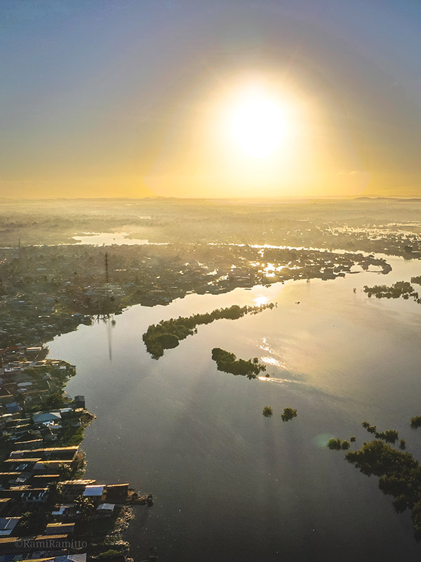
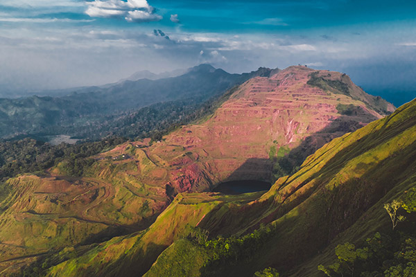

Greetings Are Essential
Always greet people before starting conversation or asking questions. Handshakes are common. You'll see the "snap" handshake — when hands separate, there's a finger snap. It's distinctly Liberian and fun once you get it.
Liberia stands apart in African history. Officially proclaimed as an independent nation in 1847 by freed American slaves, Liberia existed far before then with its indigenous people. It's Africa's oldest republic and a nation defined by resilience.
Despite challenges including civil wars that ended in 2003, Liberia is rebuilding with determination and welcoming visitors to experience its crystal coastline, warm hospitality, and unique cultural heritage. Infrastructure is still developing, and travel requires flexibility, but that's exactly what makes Liberia special. Experiences are authentic, and connections with locals are genuine.
The People
Liberia has a population of about 5 million and its size makes genuine connection possible. Liberians are generally warm and curious about visitors, especially those showing genuine interest in their culture.
English is Liberia's official language. However, Liberian English ("Kolokwa") has distinctive pronunciation and vocabulary that takes a little adjustment. Kpelle is the most widely spoken indigenous language, followed by Bassa, with Gio, Mano, Grebo, Kru, Gola, Kissi, and Vai spoken regionally. Learning even one local greeting goes a long way. For a full list of useful Liberian phrases with meanings, see Language & Phrases in The Liberia Handbook.
Liberian culture places high value on community, relationships, and interpersonal connection. Don't be surprised if someone invites you to their home or offers to share food — this generosity is genuine, not transactional. Liberians take pride in welcoming visitors. Consider visiting through organizations working on education, agriculture, or community development for deep immersion. For solo travel, local guides Lauretta Cisse and Tuzee Toure offer structured, meaningful experiences.
Religious tolerance is generally strong in Liberia. The population is dominantly Christian with Islam as the next most common religion. The dual identity — Americo-Liberian heritage meeting deep indigenous culture — makes Liberia's social fabric uniquely layered and fascinating.
Respect & Culture
A few cultural norms to know before you go. Observing these builds instant trust and genuine goodwill with most Liberians you meet.

Always greet people before starting conversation or asking questions. Handshakes are common. You'll see the "snap" handshake — when hands separate, there's a finger snap. It's distinctly Liberian and fun once you get it.
Age commands respect — common across West Africa. Greet older people first, use respectful titles, and listen when elders speak. This hierarchy is important to observe.
The right hand is for giving, receiving, and eating. The left hand is considered unclean. If you're left-handed, try to use your right hand for all interactions with locals.
Always ask permission before photographing people. Many will happily pose, but some may request money. Be particularly respectful in markets and at cultural sites.
Events might not start when scheduled — this isn't disrespect, it's a cultural difference in time perception. Practice patience and flexibility. Build extra time into your schedule.
Destinations
Monrovia is at the heart of Liberia — the largest city and commercial capital. It reflects both the nation's complex past and its contemporary energy. It bustles with food spots, shops to purchase local artwork at different art markets and offers a direct immersion into the everyday city lifestyle in Liberia.
On January 7, 1822, freed American slaves landed on this small island in the Mesurado River. Today, monuments mark this historic arrival. You can reach the island by boat from Waterside or by road via the St. Paul bridge which is the most poular used option.
Standing here connects you to the founding of Africa's first independent republic — Liberia served as the dream of return, and the reality of building something new.

One of Monrovia's largest markets runs along Bushrod Island near the port. The energy here is intense — vendors selling fresh fish, produce, textiles, household goods, and everything Liberians need for daily life.
Expect crowds, noise, and the smell of smoked fish. Keep belongings secure and consider going with a local guide as it can get very confusing due to how busy it is.
Located near the University of Liberia campus, this museum houses artifacts from indigenous Liberian cultures including traditional masks, instruments, and tools from groups like the Kpelle, Bassa, Gio, Mano, and Grebo who lived here long before the arrival of freed American slaves.
It provides valuable context for understanding Liberia's diverse cultural heritage beyond just the Americo-Liberian founding story.

In Nimba County about 5 hours away from the city — if you are a lover of hikes and love the scenic route, this is for you. The surrounding ecolodge lets you get fully immersed in nature by spending the night right in the heart of the mountains.
Located in Sinoe County about 7 hours from Monrovia. Sapo protects West Africa's largest remaining tropical rainforest. Home to endangered species including:
Access requires planning — guides through the Forestry Development Authority, permits, and preparedness for basic camping conditions. This is for adventurous travelers comfortable with remote wilderness.
Natural Beauty
Liberia boasts of one of the finest coastlines in Africa. From beautiful beaches near Monrovia to the world-class surf of Robertsport, the Atlantic coast is a must-visit.


| Beach | Distance from Monrovia | Highlights |
|---|---|---|
| Tropicana | Close to city | Live band, salsa dancing, local artwork |
| Kendeja Resort | Close to city | Resort amenities, white sand |
| Ocean Drive | Close to city | Popular local spot, restaurants |
| Libassa | Further from city | Peaceful, away from the hustle |
| Robertsport | 2–3 hours | World-class surfing, Cotton Tree Break |